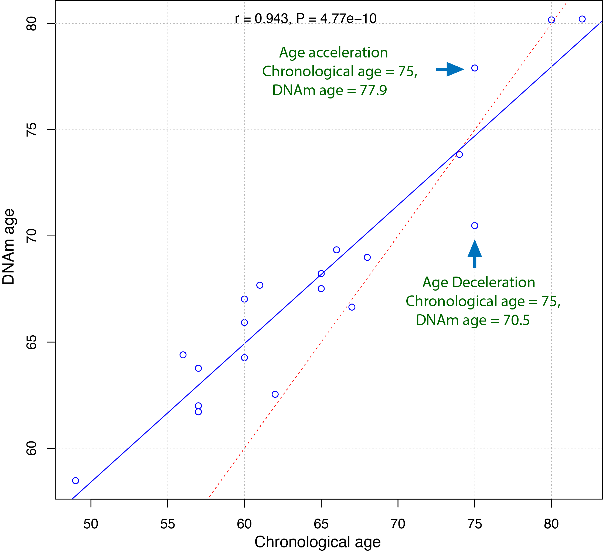

1. Horvath13
The Horvath13 command calculates the DNA methylation clock developed by Steve Horvath, as published in 2013 [1].
Predictor CpGs |
353 |
Unit |
Year |
Target Tissue |
Pan-tissue or multiple tissue |
Target Population |
Adult |
Method |
Elastic Net regression. |
Reference |
1.1. Usage
usage: epical Horvath13 [-h] [-o out_prefix] [-p PERCENT] [-d DELIMITER]
[-f {pdf,png}] [-m meta_file] [-l log_file]
[--impute {-1,0,1,2,3,4,5,6,7,8,9,10}] [-r ref_file]
[--overwrite] [--debug]
Input_file
positional arguments:
Input_file The input tabular structure file containing DNA
methylation data. This filemust have a header row,
which contains the names or labels for samples
Thefirst column of this file should contain CpG IDs.
The remaining cells in thefile should contain DNA
methylation beta values, represented as floating-
pointnumbers between 0 and 1. Use a TAB, comma, or any
other delimiter to separatethe columns. Use 'NaN' or
'NA' to represent missing values. This file can be a
regular text file or compressed file (".gz", ".Z",
".z", ".bz", ".bz2", ".bzip2").
options:
-h, --help show this help message and exit
-o out_prefix, --output out_prefix
The PREFIX of output files. If no PREFIX is provided,
the default prefix "clock_name_out" is used. The
generated output files include:
"<PREFIX>.DNAm_age.tsv": This file contains the
predicted DNAm age. "<PREFIX>.used_CpGs.tsv": This
file lists the CpGs that were used to calculate the
DNAm age. "<PREFIX>.missed_CpGs.txt": This file
provides a list of clock CpGs that were missed or
excluded from the input file. "<PREFIX>.coef.tsv":
This file contains a list of clock CpGs along with
their coefficients. The last column indicates whether
the CpG is included in the calculation.
"<PREFIX>.plots.R": This file is an R script used to
generate visualization plots.
"<PREFIX>.coef_plot.pdf": This file is the coefficient
plot in either PDF or PNG format.
-p PERCENT, --percent PERCENT
The maximum allowable percentage of missing CpGs. Set
to 0.2 (20%) by default, which means that if more than
20% of the clock CpGs are missing, the estimation of
DNAm age cannot be performed.
-d DELIMITER, --delimiter DELIMITER
Separator (usually TAB or comma) used in the input
file. If the separator is not provided, the program
will automatically detect the separator.
-f {pdf,png}, --format {pdf,png}
Figure format of the output coef plot. It must be
"pdf" or "png". The default is "pdf".
-m meta_file, --metadata meta_file
This file contains the meta information for each
sample. This file must have a header row, which
contains the names or labels for variables (such as
"Sex", "Age"). If the header row includes an "Age"
column, a scatter plot will be generated to display
the correlation between chronological age and
predicted DNAm age. The first column of this file
should contain sample IDs. The default value is None,
indicating that no meta information file is provided.
-l log_file, --log log_file
This file is used to save the log information. By
default, if no file is specified (None), the log
information will be printed to the screen.
--impute {-1,0,1,2,3,4,5,6,7,8,9,10}
The imputation method code must be one of the 12
digits including (-1, 0, 1, 2, 3, 4, 5, 6, 7, 8, 9,
10). The interpretations are: -1: Remove CpGs with any
missing values. 0: Fill all missing values with '0.0'.
1: Fill all missing values with '1.0'. 2: Fill the
missing values with **column mean** 3: Fill the
missing values with **column median** 4: Fill the
missing values with **column min** 5: Fill the missing
values with **column max** 6: Fill the missing values
with **row mean** 7: Fill the missing values with
**row median** 8: Fill the missing values with **row
min** 9: Fill the missing values with **row max** 10:
Fill the missing values with **external reference** If
10 is specified, an external reference file must be
provided.
-r ref_file, --ref ref_file
The external reference file contains two columns,
separated by either tabs or commas. The first column
represents the probe ID, while the second column
contains the corresponding beta values.
--overwrite If set, over-write existing output files.
--debug If set, print detailed information for debugging.
1.2. Example-1
Input
$ epical Horvath13 Test1_blood_N20_EPICv1_beta.tsv.gz -o output1
The beta value spreadsheet (Test1_blood_N20_EPICv1_beta.tsv.gz) is the only required input file.
2024-01-07 09:15:01 [INFO] The prefix of output files is set to "output1".
2024-01-07 09:15:01 [INFO] Loading Horvath13 clock data ...
2024-01-07 09:15:01 [INFO] Clock's name: "Horvath13"
2024-01-07 09:15:01 [INFO] Clock was trained from: "Pan-tissue"
2024-01-07 09:15:01 [INFO] Clock's unit: "years"
2024-01-07 09:15:01 [INFO] Number of CpGs used: 353
...
Output
A total of 6 files are generated.
output1.predictorCpG_coef.tsv
This file contains three columns: 1) All the predictor CpG ID; 2) Coefficients of elastic net regression; 3) Flag (True/False) indicating CpG presence in the input beta value spreadsheet.
output1.predictorCpG_found.tsv
Contains predictor CpGs and their beta values used for DNA methylation age calculation.
output1.predictorCpG_missed.tsv
Contains missed predictor CpGs from the input beta value spreadsheet.
output1.DNAm_age.tsv
This file contains the sample ID (1st column) and the predicted DNA methylation age (2nd column). If a meta-information file is provided, its variables are also copied into this file (See Example-2).
output1.coef_plot.pdf
Ranked predictor CpG plot. All predictor CpGs were ranked by their coefficients increasingly, then missed CpGs were marked as red circles with a cross, while those used CpGs were marked as grey circles.
{kind=link}
output1.plots.R
R script to generate the ranked predictor CpG plot described above.
1.3. Example-2
$ epical Horvath13 Test1_blood_N20_EPICv1_beta.tsv.gz -m Test1_blood_N20_EPICv1_info.tsv -o output2
In this case, a meta information: Test1_blood_N20_EPICv1_info.tsv file is provided. In addition to the 6 output files described above, another scatter plot will be generated showing the concordance of chronological age (X-axis) and predicted age (Y-axis).
{kind=link}
In the plot, each dot represents a sample. The blue solid line is the linear regression line for all predicted ages. The red dashed line represents the diagonal (dots on this line have identical chronological and predicted ages). Samples above and below the red dashed line indicate age acceleration and deceleration trends, respectively.
Note
The sample IDs must match between the beta value spreadsheet and the meta information file.
The meta information file must have a column named “Age”.